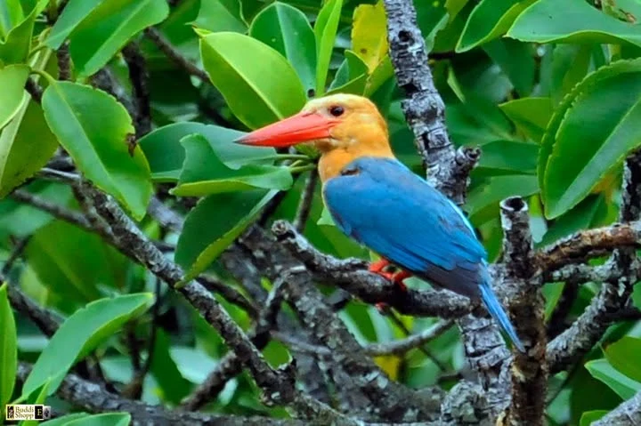
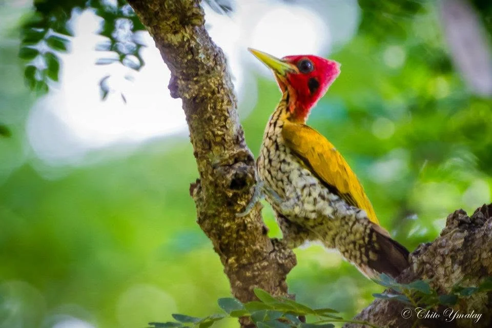
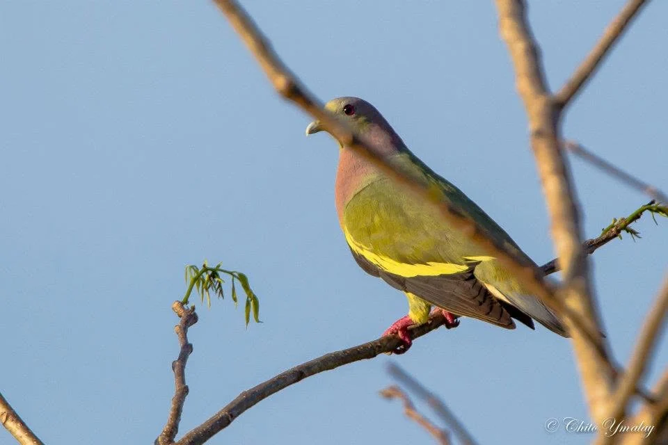
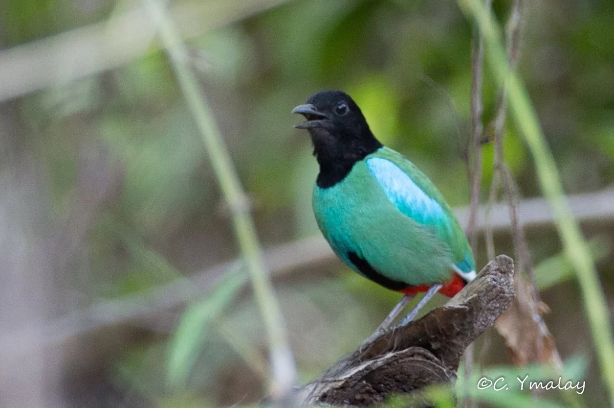
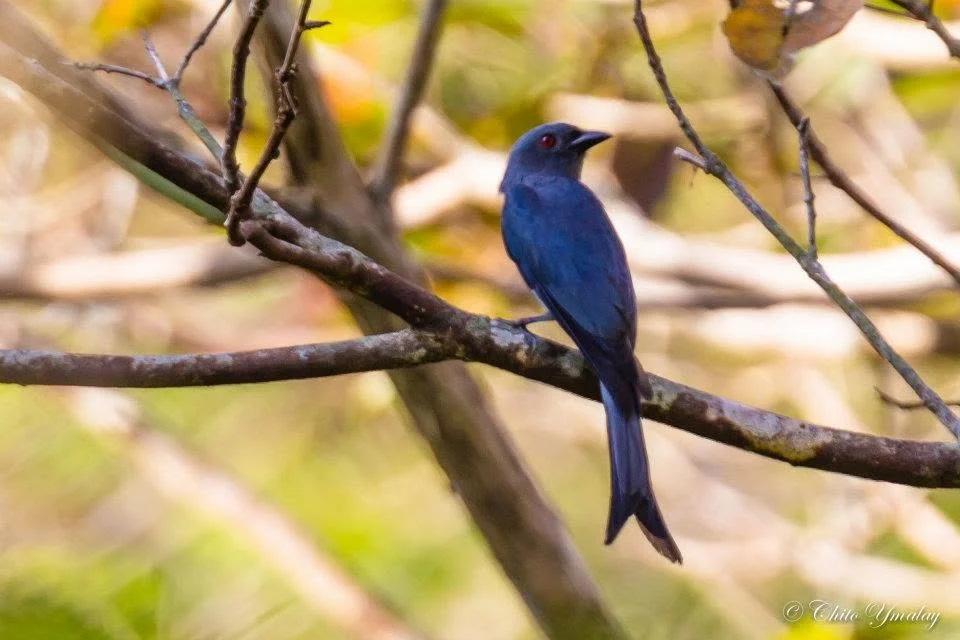
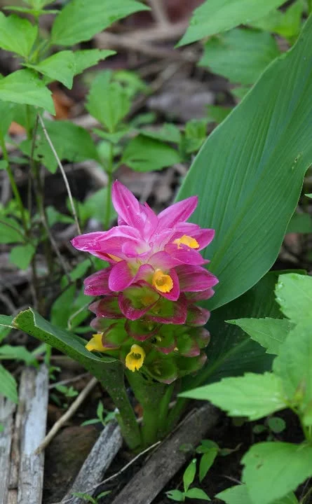

Wildlife is part of the landscape, not a backdrop.
The biodiversity page gives the archive room to breathe without crowding the homepage, while keeping species claims and photo details subject to verification.
A closer look at the life around the park.
Selected photographs from the Kingfisher Park archive reveal a landscape shared with varied birdlife and native vegetation.
Detailed species labels will be added only after identification and publication details are verified.






Enjoy wildlife without turning nature into a guarantee.
The current website prototype avoids promising specific wildlife sightings. Species names, conservation status, photo credits and publication permissions will be finalized only after verification.
KNOW BEFORE YOU GO